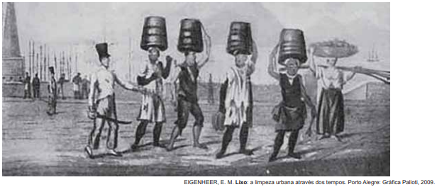

Questão 46.
Seu turno de trabalho acabou, você já está em casa e é hora do jantar da família. Mas, em vez de relaxar, você começa a pensar na possibilidade de ter recebido alguma mensagem importante no e-mail profissional ou no grupo de WhatsApp da empresa. Imediatamente, você fica distante. Momentos depois, com alguns toques na tela do celular, você está de volta ao ambiente de trabalho. O jantar e a família ficaram em segundo plano.
O texto indica práticas nas relações cotidianas do trabalho que causam para o indivíduo a
B) ampliação de atividades extras.
C) elevação de etapas burocráticas.
D) diversificação do lazer recreativo.
E) desobrigação de afazeres domésticos.
Questão 47.
Quando a taxa de remuneração do capital excede substancialmente a taxa de crescimento da economia, pela lógica, a riqueza herdada aumenta mais rápido do que a renda e a produção. Então, basta aos herdeiros poupar uma parte limitada da renda de seu capital para que ele cresça mais rápido do que a economia como um todo. Sob essas condições, é quase inevitável que a riqueza herdada supere a riqueza constituída durante uma vida de trabalho, e que a concentração do capital atinja níveis muito altos.
Considerando os princípios que legitimam as democracias liberais, a lógica econômica descrita no texto enfraquece o(a)
B) direito de nascimento.
C) eficácia da legislação.
D) ganho das financeiras.
E) eficiência dos mercados.
Questão 48.
Atualmente, o Programa de Melhoramento “Uvas do Brasil” utiliza métodos clássicos de melhoramento, como seleção massal, seleção clonal e hibridações. Ações de ajuste de manejo de seleções avançadas vêm sendo desenvolvidas paralelamente ao Programa de Melhoramento, no sentido de viabilização desses materiais. Ao longo dos seus 40 anos, uma grande equipe técnica trabalhou para executar projetos de pesquisa para atender às necessidades e às demandas de diferentes atores da vitivinicultura nacional, incluindo produtores de uvas de mesa para exportação do semiárido nordestino, viticultores interessados em produzir sucos em regiões tropicais ou pequenos produtores familiares da região da Serra Gaúcha, interessados em melhorar a qualidade do vinho artesanal que produzem.
Para melhorar a produção agrícola nas regiões mencionadas, as técnicas referidas no texto buscaram adaptar o cultivo aos(às)
B) cadeias econômicas autônomas.
C) estruturas fundiárias tradicionais.
D) elementos ambientais singulares.
E) mercados consumidores internos.
Questão 49.
TEXTO I
Portadoras de mensagem espiritual do passado, as obras monumentais de cada povo perduram no presente como o testemunho vivo de suas tradições seculares. A humanidade, cada vez mais consciente da unidade dos valores humanos, as considera um bem comum e, perante as gerações futuras, se reconhece solidariamente responsável por preservá-las, impondo a si mesma o dever de transmiti-las na plenitude de sua autenticidade.
TEXTO II
Os sistemas tradicionais de proteção se mostram cada vez menos eficientes diante do processo acelerado de urbanização e transformação de nossa sociedade. A legislação de proteção peca por considerar o monumento, até certo ponto, desvinculado da realidade socioeconômica. O tombamento, ao decretar a imutabilidade do monumento, provoca a redução de seu valor venal e o abandono, o que é uma causa, ainda que lenta, de destruição inevitável.
Escritos em temporalidade histórica aproximada, os textos se distanciam ao apresentarem pontos de vista diferentes sobre a(s)
B) substituição de materiais de valor artístico.
C) políticas de conservação de bens culturais.
D) defesa da privatização de sítios arqueológicos.
E) medidas de salvaguarda de peças museológicas.
Questão 50.
TEXTO I
Em 2016, foram gerados 44,7 milhões de toneladas de resíduos eletrônicos, um aumento de 8% na comparação com 2014. Especialistas previram um crescimento de mais 17%, para 52,2 milhões de toneladas, até 2021.
TEXTO II
Há ainda quem exporte deliberadamente lixo eletrônico para o Gana. É mais caro reciclar devidamente os resíduos no mundo industrializado, onde até existem os recursos e a tecnologia. Um negócio muito mais lucrativo é vender o lixo eletrônico a negociantes locais, que o importam alegando tratar-se de material usado. Os negociantes depois vendem o lixo aos jovens no mercado, ou noutro lado, que o desmantelam e extraem os fios de cobre. Estes são derretidos em lareiras ao ar livre, poluindo o ar e, muitas vezes, intoxicando diretamente os próprios jovens.
No contexto das discussões ambientais, as práticas descritas nos textos refletem um padrão de relações derivado do(a):
B) Divisão internacional do trabalho.
C) Gestão empresarial do toyotismo.
D) Concepção sustentável da economia.
E) Protecionismo alfandegário dos Estados.
Questão 51.
Preços justos e autorizações de uso da água devem garantir de forma adequada que a retirada de água, bem como o retorno de efluentes, mantenham operações eficientes e ambientalmente sustentáveis, de maneira que sejam adaptáveis às peculiaridades e necessidades da indústria e da irrigação em larga escala, bem como às atividades da agricultura em pequena escala e de subsistência.
Considerando o debate sobre segurança hídrica, a proposta apresentada no texto está pautada no(a)
B) monitoramento do fornecimento urbano.
C) racionamento da capacidade fluvial.
D) revitalização gradativa de solos.
E) revitalização gradativa de solos.
Questão 52.
Durante os anos de 1854-55, o governo brasileiro — por meio de sua representação diplomática em Londres — e os livre-cambistas ingleses — nas colunas do Daily News e na Câmara dos Comuns — aumentaram a pressão pela revogação da Lei Aberdeen. O governo britânico, entretanto, ainda receava que, sem um tratado anglo-brasileiro satisfatório para substituí-la, não haveria nada que impedisse os brasileiros de um dia voltarem aos seus velhos hábitos.
As tensões diplomáticas expressas no texto indicam o interesse britânico em
B) compartilhar negócios marítimos.
C) fomentar políticas higienistas.
D) manter a proibição comercial.
E) promover o negócio familiar.
Questão 53.
Famoso por ser o encantador de viúvas da cidade de Cabaceiras, na Paraíba, Zé de Sila é um contador de histórias parecido com o personagem Chicó, do Auto da Compadecida. Ele defende veementemente que a oração da avó sustentava mais a chuva. “Quando era pequeno e chovia por aqui, ajudava minha avó colocando os pratos emborcados no terreiro para diminuir o vento. Ela fazia isso e rezava para a chuva durar mais”, diz Zé de Sila.
Ao destacar expressões e vivências populares do cotidiano, o texto mobiliza os seguintes aspectos da diversidade regional:
B) Práticas místicas associadas ao patrimônio cultural.
C) Manifestações teatrais atreladas ao imaginário político.
D) Narrativas fílmicas relacionadas às intempéries climáticas.
E) Argumentações literárias interligadas às catástrofes ambientais.
Questão 54.
O uso de novas tecnologias envolve a assimilação de uma cultura empresarial na qual haja a integração entre as propostas de modernização tecnológica e a racionalização. Nem sempre o uso de novas tecnologias é apenas um processo técnico na medida em que pressupõe uma nova orientação no controle do capital, no processo produtivo e na qualificação da mão de obra. Dos diversos efeitos que derivaram dessa orientação, a terceirização, a precarização e a flexibilização aparecem com constância como características do paradigma flexível, em substituição ao modelo taylorista-fordista.
O uso de novas tecnologias relacionado ao controle empresarial é criticado no texto em razão da
B) capacitação de profissionais liberais.
C) fragilização das relações de trabalho.
D) hierarquização dos cargos executivos.
E) aplicação dos conhecimentos da ciência.
Questão 55.
A categoria de refugiado carrega em si as noções de transitoriedade, provisoriedade e temporalidade. Os refugiados situam-se entre o país de origem e o país de destino. Ao transitarem entre os dois universos, ocupam posição marginal, tanto em termos identitários
assentada na falta de pertencimento pleno enquanto membros da comunidade receptora e nos vínculos introjetados por códigos partilhados com a comunidade de origem — quanto em termos jurídicos, ao deixarem de exercitar, ao menos em caráter temporário, o status de cidadãos no país de origem e portar o status de refugiados no país receptor.
A condição de transitoriedade dos refugiados no Brasil, conforme abordada no texto, é provocada pela associação entre
B) miscigenação étnica e limites fronteiriços.
C) desqualificação profissional e ação policial.
D) instabilidade financeira e crises econômicas.
E) desenraizamento cultural e insegurança legal.
Questão 56.
Mulheres naturalistas raramente figuraram na corrida por conhecer terras exóticas. No século XIX, mulheres como Lady Charlotte Canning eventualmente coletavam espécimes botânicos, mas quase sempre no papel de esposas coloniais, viajando para locais onde seus maridos as levavam e não em busca de seus próprios projetos científicos.
No contexto do século XIX, a relação das mulheres com o campo científico, descrita no texto, é representativa da
B) transformação dos espaços de lazer.
C) superação do pensamento patriarcal.
D) incorporação das estratificações sociais.
E) substituição das atividades domésticas.
Questão 57.
Nos setores mais altamente desenvolvidos da sociedade contemporânea, o transplante de necessidades sociais para individuais é de tal modo eficaz que a diferença entre elas parece puramente teórica. As criaturas se reconhecem em suas mercadorias; encontram sua alma em seu automóvel, casa em patamares, utensílios de cozinha.
O texto indica que, no capitalismo, a satisfação dos desejos pessoais é influenciada por
B) incentivos controlados de consumo.
C) prescrições coletivas de organização.
D) mecanismos subjetivos de identificação.
E) repressões racionalizadas do narcisismo.
Questão 58.
A vida das pessoas se modifica com a mesma rapidez com que se reproduz a cidade. O lugar da festa, do encontro quase desaparecem; o número de brincadeiras infantis nas ruas diminui — as crianças quase não são vistas; os pedaços da cidade são vendidos, no mercado, como mercadorias; árvores são destruídas, praças transformadas em concreto. Por outro lado, os habitantes parecem perder na cidade suas próprias referências. A imagem de uma grande cidade hoje é tão mutante que se assemelha à de um grande guindaste, aliás, a presença maciça destes, das britadeiras, das betoneiras nos dão o limite do processo de transformação diária ao qual está submetida a cidade.
No contexto das grandes cidades brasileiras, a situação apresentada no texto vem ocorrendo como consequência da
B) preservação da essência do espaço público.
C) ampliação das normas de controle ambiental.
D) flexibilização das regras de participação política.
E) alteração da organização da paisagem geográfica.
Questão 59.
No semiárido brasileiro, o sertanejo desenvolveu uma acuidade detalhada para a observação dos fenômenos, ao longo dos tempos, presenciados na natureza, em especial para a previsão do tempo e do clima, utilizando como referência a posição dos astros, constelação e nuvens. Conforme os sertanejos, a estação vai ser chuvosa quando a primeira lua cheia de janeiro “sair vermelha, por detrás de uma barra de nuvens”, mas “se surgir prateada, é sinal de seca”.
O texto expõe a produção de um conhecimento que se constitui pela
B) experiência perceptiva.
C) negação das tradições.
D) padronização das culturas.
E) uniformização das informações.
Questão 60.
Vocês que fazem parte dessa massa Que passa nos projetos do futuro
É duro tanto ter que caminhar
E dar muito mais do que receber Ê, ô, ô, vida de gado
Povo marcado Ê, povo feliz!
Qual comportamento coletivo é criticado no trecho da letra da canção lançada em 1979
B) Passividade social.
C) Altruísmo religioso.
D) Autocontrole moral.
E) Inconformismo eleitoral.
Questão 61.
Desde 2009, a área portuária carioca vem sofrendo grandes transformações realizadas no escopo da operação urbana consorciada conhecida como Porto Maravilha. Parte importante na tentativa de tornar o Rio de Janeiro um polo de serviços internacional, a “revitalização” urbana deveria deixar para trás uma paisagem geográfica que ainda recordava a cidade do início do século passado para abrir espaço, em seu lugar, à instalação de modernas torres comerciais, espaços de consumo e lazer inéditos e cerca de cem mil novos moradores, uma nova configuração socioespacial capaz de alçar a área portuária do Rio de Janeiro ao patamar dos waterfronts de Baltimore, Barcelona e Buenos Aires.
As intervenções urbanas descritas derivam de um processo socioespacial que busca a
B) contenção da especulação no mercado imobiliário.
C) democratização da habitação popular.
D) valorização das funções tradicionais.
E) priorização da gestão participativa.
Questão 62.
Constatou-se uma ínfima inserção da indústria brasileira nas novas tecnologias ancoradas na microeletrônica, capazes de acarretar elevação da produtividade nacional de forma sustentada. Os motores do crescimento nacional, há décadas, são os grupos relacionados a commodities agroindustriais e à indústria representativa do antigo padrão fordista de produção, esta última também limitada pela baixa potencialidade futura de desencadear inovações tecnológicas capazes de proporcionar elevação sustentada da produtividade.
Um efeito desse cenário para a sociedade brasileira tem sido o(a)
B) retorno à estatização econômica.
C) ampliação do poder de consumo.
D) subordinação aos fluxos globais.
E) incentivo à política de modernização.
Questão 63.
As atividades mineradoras têm criado conflitos com extrativistas, quilombolas, pequenos agricultores, ribeirinhos, pescadores artesanais e povos indígenas. Em geral, estes sujeitos têm encontrado grande dificuldade de reproduzir suas dinâmicas territoriais depois da instalação da atividade mineradora, nem sempre com reconhecimento do impacto ao seu território pelo Estado e pela empresa, ficando sem qualquer tipo de compensação econômica. Em outros casos, nem a compensação econômica tem sido capaz de evitar o esgarçamento das relações sociais destes grupos que sofrem com a reconstrução abrupta das suas identidades e de suas dinâmicas territoriais.
O texto apresenta uma relação entre atividade econômica e organização social marcada pelo(a)
B) rompimento de vínculos locais.
C) carência de investimento financeiro.
D) estabelecimento de práticas agroecológicas.
E) enriquecimento das comunidades autóctones.
Questão 64.
Por maioria, nós não entendemos uma quantidade relativa maior, mas a determinação de um estado ou de um padrão em relação ao qual tanto as quantidades maiores quanto as menores serão ditas minoritárias. Maioria supõe um estado de dominação. É nesse sentido que as mulheres, as crianças e também os animais são minoritários.
No texto, a caracterização de uma minoria decorre da existência de
B) políticas de incentivos estatais.
C) relações de natureza arbitrária.
D) valorações de conexões simétricas.
E) hierarquizações de origem biológica.
Questão 65.
Ao mesmo tempo, graças às amplas possibilidades que tive de observar a classe média, vossa adversária, rapidamente concluí que vós tendes razão, inteira razão, em não esperar dela qualquer ajuda. Seus interesses são diametralmente opostos aos vossos, mesmo que ela procure incessantemente afirmar o contrário e vos queira persuadir que sente a maior simpatia por vossa sorte. Mas seus atos desmentem suas palavras.
No texto, o autor apresenta delineamentos éticos que correspondem ao(s)
B) alicerce da ideia de mais-valia.
C) fundamentos do método científico.
D) paradigmas do processo indagativo.
E) domínios do fetichismo da mercadoria.
Questão 66.
Houve crescimento de 74% da população brasileira encarcerada entre 2005 e 2012. As análises possibilitaram identificar o perfil da população que está nas prisões do país: homens, jovens (abaixo de 29 anos), negros, com ensino fundamental incompleto, acusados de crimes patrimoniais e, no caso dos presos adultos, condenados e cumprindo regime fechado e, majoritariamente, com penas de quatro até oito anos.
Nesse contexto, as políticas públicas para minimizar a problemática descrita devem privilegiar a
B) promoção da inclusão social.
C) redução da maioridade penal.
D) contenção da corrupção política.
E) expansão do período de reclusão.
Questão 67.
Nem guerras, nem revoltas. Os incêndios eram o mais frequente tormento da vida urbana no Regnum Italicum. Entre 880 e 1080, as cidades estiveram constantemente entregues ao apetite das chamas. A certa altura, a documentação parece vencer pela insistência do vocabulário, levando até o leitor mais crítico a cogitar que os medievais tinham razão ao tratar aqueles acontecimentos como castigos que antecediam o julgamento final. Como um quinto cavaleiro apocalíptico, o incêndio agia ao feitio da peste ou da fome: vagando mundo afora, retornava de tempos em tempos e expurgava justos e pecadores num tormento derradeiro, como insistiam os textos do século X. O impacto acarretado sobre as relações sociais era imediato e prolongava-se para além da destruição material. As medidas proclamadas pelas autoridades faziam mais do que reparar os danos e reconstruir a paisagem: elas convertiam a devastação em uma ocasião para alterar e expandir não só a topografia urbana, mas as práticas sociais até então vigentes.
De acordo com o texto, a catástrofe descrita impactava as sociedades medievais por proporcionar a
B) revelação do descaso público e das degradações ambientais
C) transformação do imaginário popular e das crenças religiosas.
D) remodelação dos sistemas políticos e das administrações locais.
E) reconfiguração dos espaços ocupados e das dinâmicas comunitárias.
Questão 68.
O protagonismo indígena vem optando por uma estratégia de “des-invisibilização”, valendo-se da dinâmica das novas tecnologias. Em outubro de 2012, após receberem uma liminar lhes negando o direito a permanecer em suas terras, os Guarani de Pyelito Kue divulgaram uma carta na qual se dispunham a morrer, mas não a sair de suas terras. Esse fato foi amplamente divulgado, gerando uma grande mobilização na internet, que levou milhares de pessoas a escolherem seu lado, divulgando a hashtag “#somostodosGuarani-Kaiowá” ou acrescentando o sobrenome Guarani-Kaiowá a seus nomes nos perfis das principais redes sociais.
A estratégia comunicativa adotada pelos indígenas, no contexto em pauta, teve por efeito
B) abalar a identidade de povos tradicionais.
C) inserir as comunidades no mercado global.
D) distanciar os grupos de culturas locais.
E) angariar o apoio de segmentos étnicos externos.
Questão 69.
O governo Vargas, principalmente durante o Estado Novo (1937-1945), pretendeu construir um Estado capaz de criar uma nova sociedade. Uma dimensão-chave desse projeto tinha no território seu foco principal. Não por acaso, foram criadas então instituições encarregadas de fornecer dados confiáveis para a ação do governo, como o Conselho Nacional de Geografia, o Conselho Nacional de Cartografia, o Conselho Nacional de Estatística e o Instituto Brasileiro de Geografia e Estatística (IBGE), este de 1938.
A criação dessas instituições pelo governo Vargas representava uma estratégia política de
B) controlar o crescimento exponencial da população brasileira.
C) obter conhecimento científico das diversidades regionais.
D) conter o fluxo migratório do campo para a cidade.
E) propor a criação de novas unidades da federação.
Questão 70.
Foram esses cientistas Xavante que esclareceram os mistérios da germinação de cada uma das sementes. Eles tinham o conhecimento para quebrar a dormência. O fogo era fundamental para muitas; para outras, o caminho para despertar passava pelo sistema digestivo dos animais silvestres. “Essa planta nasce depois que fazemos a caçada com fogo, diziam eles, esta outra quando a anta caga a semente, aquela precisa ser comida pelo lobo”. Aliando os conhecimentos dos cientistas da aldeia e da cidade, essa área do Cerrado foi recuperada totalmente.
No texto, a relação socioespacial dos indígenas evidencia a importância do(a)
B) cultivo de hortaliças para o consumo urbano.
C) saber tradicional para a conservação ambiental.
D) criação de gado para o aprimoramento genético.
E) reflorestamento comercial para a produção orgânica.
Questão 71.
Desde os primórdios da formação da crosta terrestre até os dias de hoje, as rochas formadas vêm sendo continuamente destruídas. Os produtos resultantes da destruição das rochas são transportados pela água, vento e gelo a toda superfície terrestre, acionados pelo calor e pela gravidade. Cessada a energia transportadora, são depositados nas regiões mais baixas da crosta, podendo formar pacotes rochosos.
As transformações na superfície terrestre, conforme descritas no texto, compõem o seguinte processo geomorfológico:
B) Instabilidade sísmica.
C) Intemperismo biológico.
D) Derramamento basáltico.
E) Compactação superficial.
Questão 72.
A participação social no planejamento e na gestão urbanos ganhou impulso a partir do Estatuto da Cidade (Lei n. 10.257/2001), que estabeleceu condições para elaboração de planos diretores participativos, instrumentos esses indutores da expansão urbana e do ordenamento territorial que, a princípio, devem buscar representar os interesses dos diversos segmentos da sociedade. No entanto, é notório o limite à representação dos interesses das camadas sociais menos favorecidas nesse processo. Este rumo deve ser corrigido e deve-se continuar buscando mecanismos de inclusão dos interesses de toda a sociedade.
Qual medida promove a participação social descrita no texto?
B) Privatização dos espaços públicos.
C) Adensamento das áreas de comércio.
D) Valorização dos condomínios fechados.
E) Fortalecimento das associações de bairro.
Questão 73.
Quando Getúlio Vargas se suicidou, em agosto de 1954, o país parecia à beira do caos. Acuado por uma grave crise política, o velho líder preferiu uma bala no peito à humilhação de aceitar uma nova deposição, como a que sofrera em outubro de 1945. Entretanto, ao contrário do que imaginavam os inimigos, ao ruído do estampido não se seguiu o silêncio que cerca a derrota.
O evento analisado no texto teve como repercussão imediata na política nacional a
B) intervenção militar.
C) abertura democrática.
D) campanha anticomunista.
E) radicalização oposicionista.
Questão 74.
Eu, Dom João, pela graça de Deus, faço saber a V. Mercê que me aprouve banir para essa cidade vários ciganos — homens, mulheres e crianças — devido ao seu escandaloso procedimento neste reino. Tiveram ordem de seguir em diversos navios destinados a esse porto, e, tendo eu proibido, por lei recente, o uso da sua língua habitual, ordeno a V. Mercê que cumpra essa lei sob ameaça de penalidades, não permitindo que ensinem dita língua a seus filhos, de maneira que daqui por diante o seu uso desapareça.
A ordem emanada da Coroa portuguesa para sua colônia americana, em 1718, apresentava um tratamento da identidade cultural pautado em
B) suprimir formas divergentes de interação social.
C) evitar envolvimento estrangeiro na economia local.
D) reprimir indivíduos engajados em revoltas nativistas.
E) controlar manifestações artísticas de comunidades autóctones.
Questão 75.
De um lado, ancorados pela prática médica europeia, por outro, pela terapêutica indígena, com seu amplo uso da flora nativa, os jesuítas foram os reais iniciadores do exercício de uma medicina híbrida que se tornou marca do Brasil colonial. Alguns religiosos vinham de Portugal já versados nas artes de curar, mas a maioria aprendeu na prática diária as funções que deveriam ser atribuídas a um físico, cirurgião, barbeiro ou boticário.
Conforme o texto, o que caracteriza a construção da prática medicinal descrita é a
B) rejeição dos dogmas cristãos.
C) superação da tradição popular.
D) imposição da farmacologia nativa.
E) conjugação de saberes empíricos.
Questão 76.
Desde o século XII que a cristandade ocidental era agitada pelo desafio lançado pela cultura profana — a dos romances de cavalaria, mas também a cultura folclórica dos camponeses e igualmente a dos citadinos, de caráter mais jurídico — à cultura eclesiástica, cujo veículo era o latim. Francisco de Assis veio alterar a situação, propondo aos seus ouvintes uma mensagem acessível a todos e, simultaneamente, enobrecendo a língua vulgar através do seu uso na religião.
O comportamento desse religioso demonstra uma preocupação com as características assumidas pela Igreja e com as desigualdades sociais compartilhada no seu tempo pelos(as)
B) movimentos heréticos.
C) integrantes das Cruzadas.
D) corporações de ofícios.
E) universidades medievais.
Questão 77.
Por que o Brasil continuou um só enquanto a América espanhola se dividiu em vários países?
Para o historiador brasileiro José Murilo de Carvalho, no Brasil, parte da sociedade era muito mais coesa ideologicamente do que a espanhola. Carvalho argumenta que isso se deveu à tradição burocrática portuguesa. “Portugal nunca permitiu a criação de universidades em sua colônia”. Por outro lado, na América espanhola, entre 1772 e 1872, 150 mil estudantes se formaram em universidades locais. Para o historiador mexicano Alfredo Ávila Rueda, as universidades na América espanhola eram, em sua maioria, reacionárias. Nesse sentido, o historiador mexicano diz acreditar que a livre circulação de impressos (jornais, livros e panfletos) na América espanhola, que não era permitida na América portuguesa (a proibição só foi revertida em 1808), teve função muito mais importante na construção de regionalismos do que propriamente as universidades.
Os pontos de vista dos historiadores referidos no texto são divergentes em relação ao
B) controle exercido pelos grupos de imprensa na centralização das esferas administrativas.
C) abandono sofrido pelas comunidades de docentes na concepção de coletividades políticas.
D) lugar ocupado pelas associações de acadêmicos no fortalecimento das agremiações estudantis.
E) protagonismo assumido pelos meios de comunicação no desenvolvimento das nações alfabetizadas.
Questão 78.
TEXTO I
Macaulay enfatizou o glorioso acontecimento representado pela luta do Parlamento contra Carlos I em prol da liberdade política e religiosa do povo inglês; significou o primeiro confronto entre a liberdade e a tirania real, primeiro combate em favor do Iluminismo e do Liberalismo.
TEXTO II
A Revolução Inglesa, como todas as revoluções, foi causada pela ruptura da velha sociedade, e não pelos desejos da velha burguesia. Na década de 1640, camponeses se revoltaram contra os cercamentos, tecelões contra a miséria resultante da depressão e os crentes contra o Anticristo a fim de instalar o reino de Cristo na Terra.
A concepção da Revolução Inglesa apresentada no Texto II diferencia-se da do Texto I ao destacar a existência de
B) homogeneidade das lutas religiosas.
C) unicidade das abordagens históricas.
D) superficialidade dos interesses políticos.
E) superioridade dos aspectos econômicos.
Questão 79.
As grandes empresas seriam, certamente, representação de um exercício de poder, ante o grau de autonomia de ação de que dispõem. O que se pretende salientar é a ideia de enclave: plantas industriais que estabelecem relações escassas com o entorno, mas exercem grande influência na economia extralocal.
Que tipo de ação tomada por empresas reflete a forma de territorialização da produção industrial apresentada no texto?
B) Promoção de eventos comunitários.
C) Recuperação de áreas degradadas.
D) Incorporação de saberes tradicionais.
E) Importação de mão de obra qualificada.
Questão 80.
Numa sociedade em transição, a marcha da mudança, em diferentes graus, está impressa em todos os aspectos da ordem social, especialmente no jogo político, que nessas sociedades sempre apresenta padrões característicos de ambivalência, cujas raízes sociais se encontram na coexistência de dois padrões de estrutura social: o padrão tradicional, em declínio, e o novo, emergente, em expansão. Em tais situações, é possível encontrar, simultaneamente, apoio para uma orientação política ou para outra que seja exatamente o seu oposto. O padrão ambivalente do processo político, nas sociedades em desenvolvimento, é o que explica um dos seus traços mais salientes, e que consiste na tendência ao adiamento das grandes decisões. Resulta daí que a inércia política ou a convulsão política podem se suceder uma à outra em períodos surpreendentemente curtos.
De acordo com a perspectiva apresentada, central no pensamento social brasileiro dos anos 1950 e 1960, o desenvolvimento do país foi marcado por
B) anomalias na execução dos planos econômicos ortodoxos.
C) descompassos na construção de quadros institucionais modernos.
D) ilegitimidade na atuação dos movimentos de representação classista.
E) vagarosidade na dinâmica de aperfeiçoamento dos programas partidários.
Questão 81.
Manifesto dos Pioneiros da Educação Nova — 1932
A Educação Nova, alargando a sua finalidade para além dos limites das classes, assume, com uma feição mais humana, a sua verdadeira função social, preparando-se para formar “a hierarquia democrática” pela “hierarquia das capacidades”, recrutadas em todos os grupos sociais, a que se abrem as mesmas oportunidades de educação. Ela tem, por objeto, organizar e desenvolver os meios de ação durável com o fim de “dirigir os desenvolvimentos natural e integral do ser humano em cada uma das etapas de seu crescimento”, de acordo com uma certa concepção do mundo.
Os autores do manifesto citado procuravam contrapor-se ao caráter oligárquico da sociedade brasileira. Nesse sentido, o trecho propõe uma relação necessária entre
B) acesso à escola e valorização do mérito.
C) ampliação de vagas e formação de gestores.
D) disponibilidade de financiamento e pesquisa avançada.
E) remuneração de professores e extinção do analfabetismo.
Questão 82.
Sócrates: “Quem não sabe o que uma coisa é, como poderia saber de que tipo de coisa ela é? Ou te parece ser possível alguém que não conhece absolutamente quem é Mênon, esse alguém saber se ele é belo, se é rico e ainda se é nobre? Parece-te ser isso possível? Assim, Mênon, que coisa afirmas ser a virtude?”.
A atitude apresentada na interlocução do filósofo com Mênon é um exemplo da utilização do(a)
B) método dialético.
C) linguagem trágica.
D) explicação fisicalista.
E) suspensão judicativa.
Questão 83.
No seio de diversos povos africanos, nomeadamente no antigo Reino do Congo, existem testemunhos gráficos de que a escrita tomava várias formas. Exemplo disso são as tampas de panela esculpidas em baixo-relevo do povo Woyo (região de Cabinda), com cenas e provérbios do cotidiano, desenhos na terra ou areia, imagens gravadas ou inscritas nos bastões de chefe ou em pedras sagradas, mas, sobretudo, movimentos do corpo humano inscritos num gestual familiar. Entre os Woyo existia o costume de os pais oferecerem aos filhos testos ou tampas de panelas entalhados, transmitindo uma espécie de recado, com signos codificados que traduziam orientações para conseguir uma boa relação conjugal, ter sensatez na escolha do cônjuge e estar alerta para as dificuldades do casamento.
Para o povo Woyo, os artefatos culturais mencionados no texto cumprem a função de uma
B) imposição das formas de comunicação.
C) desvalorização dos comportamentos da juventude.
D) destituição dos valores do matrimônio.
E) etnografia das celebrações religiosas.
Questão 84.
O torém dependia de organização familiar, sendo brincado por pessoas com vínculos de parentesco e afinidade que viviam no local. Era visto como uma brincadeira, um entretenimento feito para os próprios participantes e seus conhecidos. O tempo do caju era o pretexto para sua realização, sendo chamadas várias pessoas da região a fim de tomar mocororó, bebida fermentada do caju.
O ritual mencionado no texto atribui à manifestação cultural de grupos indígenas do Nordeste brasileiro a função de
B) estimular a coesão social.
C) superar a atividade artesanal.
D) manipular a memória individual.
E) modernizar o comércio tradicional.
Questão 85.

No anúncio publicado na segunda metade do século XIX, qual a estratégia de resistência escrava apresentada?
B) Fundação de territórios quilombolas.
C) Suavização da aplicação de normas.
D) Regularização das funções remuneradas.
E) Constituição de economia de subsistência.
Questão 86.
A filosofia é como uma árvore, cujas raízes são a metafísica; o tronco, a física, e os ramos que saem do tronco são todas as outras ciências, que se reduzem a três principais: a medicina, a mecânica e a moral, entendendo por moral a mais elevada e a mais perfeita porque pressupõe um saber integral das outras ciências, e é o último grau da sabedoria.
Essa construção alegórica de Descartes, acerca da condição epistemológica da filosofia, tem como objetivo
B) refutar o elemento fundamental das crenças.
C) impulsionar o pensamento especulativo.
D) recepcionar o método experimental.
E) incentivar a suspensão dos juízos.
Questão 87.
Minha fórmula para o que há de grande no indivíduo é amor fati: nada desejar além daquilo que é, nem diante de si, nem atrás de si, nem nos séculos dos séculos. Não se contentar em suportar o inelutável, e ainda menos dissimulá-lo, mas amá-lo.
Essa fórmula indicada por Nietzsche consiste em uma crítica à tradição cristã que
B) impede o avanço científico no contexto moderno.
C) associa os cultos pagãos à sacralização da natureza.
D) condena os modelos filosóficos da Antiguidade Clássica.
E) consagra a realização humana ao campo transcendental.
Questão 88.
É preciso usar de violência e rebater varonilmente os apetites dos sentidos sem atender ao que a carne quer ou não quer, mas trabalhando por sujeitá-la ao espírito, ainda que se revolte. Cumpre castigá-la e curvá-la à sujeição, a tal ponto que esteja disposta para tudo, sabendo contentar-se com pouco e deleitar-se com a simplicidade, sem resmungar por qualquer incômodo.
Qual característica do ascetismo medieval é destacada no texto?
B) Afirmação do pensamento racional.
C) Desqualificação da atividade laboral.
D) Condenação da alimentação impura.
E) Desvalorização da materialidade corpórea.
Questão 89.

Considerando as informações apresentadas, o prédio do Congresso Nacional, em Brasília, no dia 21 de junho, às 12 horas, projetará sua sombra para a direção
B) sul.
C) leste.
D) oeste.
E) nordeste.
Questão 90.
TEXTO I
TEXTO II
A repugnante tarefa de carregar lixo e os dejetos da casa para as praças e praias era geralmente destinada ao único escravo da família ou ao de menor status ou valor. Todas as noites, depois das dez horas, os escravos conhecidos popularmente como “tigres” levavam tubos ou barris de excremento e lixo sobre a cabeça pelas ruas do Rio.
A ação representada na imagem e descrita no texto evidencia uma prática do cotidiano nas cidades no Brasil nos séculos XVIII e XIX caracterizada pela
B) reiteração das hierarquias sociais.
C) sacralização das atividades laborais.
D) superação das exclusões econômicas.
E) ressignificação das heranças religiosas.